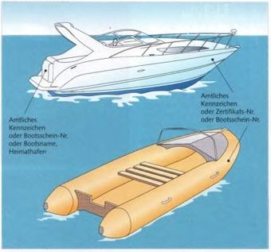

Моторные лодки мощностью от 2,21 кВт (3 л.с.) на внутренних водных путях должны иметь официальный или официально признанный регистрационный номер.

Официальный номер состоит из комбинации букв и цифр и выдаётся по заявлению водными и судоходными управлениями вместе с документом, который должен всегда находиться на борту и действителен только вместе с удостоверением личности или паспортом.
Номер должен быть нанесён с обеих сторон носа или на корме. Буквы и цифры должны иметь высоту не менее 10 см и хорошо контрастировать с фоном.
К официальным обозначениям также относятся:
• регистрационный номер с буквой «B» для судов, внесённых во внутренний судовой реестр (от 10 м³ водоизмещения), а также имя судна и порт приписки на корме;
• для судов, зарегистрированных в морском судовом реестре (длина более 15 м) — номер IMO или радиопозывной;
• номер сертификата флага с буквой «F».
Официально признанный номер состоит из номера «Международного судового удостоверения для прогулочных судов» и буквы организации, выдавшей документ: «S» — Немецкий парусный союз (DSV), «M» — Немецкая ассоциация моторных яхт (DMYV), «A» — ADAC.
Этот номер также может размещаться на носу или на корме.
Для водных мотоциклов (гидроциклов) допускаются только официальные номера.
Меньшие и менее мощные лодки, не подлежащие официальной регистрации, должны иметь внутри или снаружи на видном месте имя и адрес владельца, а на носу или корме — название лодки.
Независимо от маркировки, спортивные суда с водоизмещением 10 м³ и более должны быть внесены в реестр внутренних судов. Суда с водоизмещением от 5 до 10 м³ могут быть зарегистрированы добровольно.
Более крупные моторные лодки часто оснащаются (УКВ-) радиостанциями. На внутренних водных путях они могут использоваться только в том случае, если соответствуют Региональному соглашению о радиосвязи внутреннего судоходства. Это означает, помимо прочего, что они должны быть оборудованы системой ATIS (Automatic Transmitter Identification System) и настроены для рабочего канала «судно‑судно».
Оборудованием может пользоваться только человек, имеющий свидетельство УКВ‑радиооператора для внутреннего судоходства (UBI).